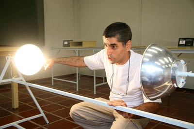

Assessoria de Comunicação Social - Ano XVII nº 760 - 6 a 12/12/2006
Artefatos mostram princípios matemáticos
Dentro da programação da 18ª Semana de Matemática foi realizada uma exposição evidenciando alguns conceitos matemáticos, apresentados de maneira simples e acessíveis. Segundo o professor João Roberto Gerônimo, a proposta do projeto é mudar a visão que muitas pessoas têm da Matemática como sendo matéria complicada e chata. Ficaram expostos durante o evento, 26 objetos enfocando o conceito de simetria e 19 mostrando as propriedades das curvas.
Durante a solenidade de abertura da Semana, no dia 27, o coordenador geral, professor Cícero Lopes Frota, salientou a importância do evento, abordou as dificuldades do Departamento de Matemática, em especial, a falta de professores, e destacou a implantação do novo projeto pedagógico que entrou em vigor este ano. O reitor Décio Sperandio, também presente na solenidade, lembrou que se formou na primeira turma de Matemática da UEM e disse conhecer bem o Departamento, inclusive suas dificuldades.

João Roberto Gerônimo mostra como funciona uma parabólica